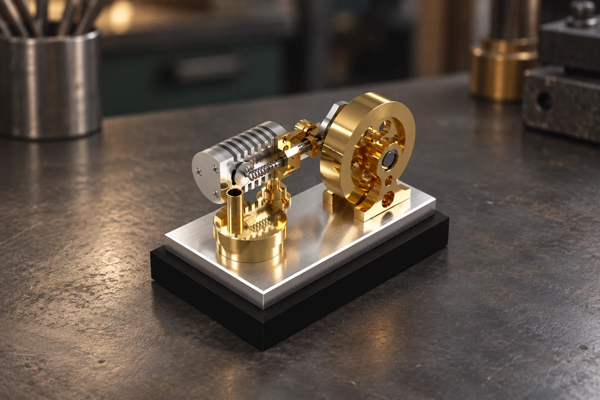

01 / MODELMOTOR
Flame Eater Engine
Jeg fremstillede alle delene til motoren selv bortset fra kuglelejerne, som er indkøbt. Jeg tog udgangspunkt i et eksisterende design fra en hjemmeside, som en medstuderende anbefalede. Motoren fungerede fint ved den første test.

- Materiale
- Messing · aluminium · stål
- Proces
- Manuel drejning og fræsning · CNC-fræsning
- Fokus
- Pasning mellem cylinder og stempel
Sådan fungerer motoren
En Flame Eater Engine er en vakuummotor. Den trækker varme gasser fra en flamme ind i cylinderen. Når ventilen lukker, og gasserne køler af, falder trykket. Det højere lufttryk udenfor driver stemplet, mens svinghjulet hjælper bevægelsen videre til næste cyklus.
Fremstilling
De drejede dele fremstillede jeg på vores Weiler Matador. De manuelt fræsede dele blev bearbejdet på vores Deckel-fræsere, og til CNC-fræsningen brugte jeg vores Haas Mini Mill.
Resultat og næste forbedring
Motoren fungerede fint ved den første test. En videreudvikling ville især handle om selve motorens design.
Udfordringen
Den største udfordring var at få pasningen mellem cylinder og stempel rigtig. Her mødes kravene til bevægelse og tæthed i to dele, der skal fungere sammen.
Min fremgangsmåde
Pasningen mellem stempel og cylinder krævede flere justeringer. Jeg tog gentagne spring passes på begge dele og kontrollerede løbende med GO/NO-GO-lærer og ved at afprøve delene sammen. Målet var en jævn bevægelse med lav friktion, da motoren kører tørt uden smøring.
Det tager jeg med videre
Projektet lærte mig at arbejde tålmodigt med pasninger og kontrollere undervejs. Hvis jeg skulle videreudvikle motoren, ville jeg først arbejde med selve designet.